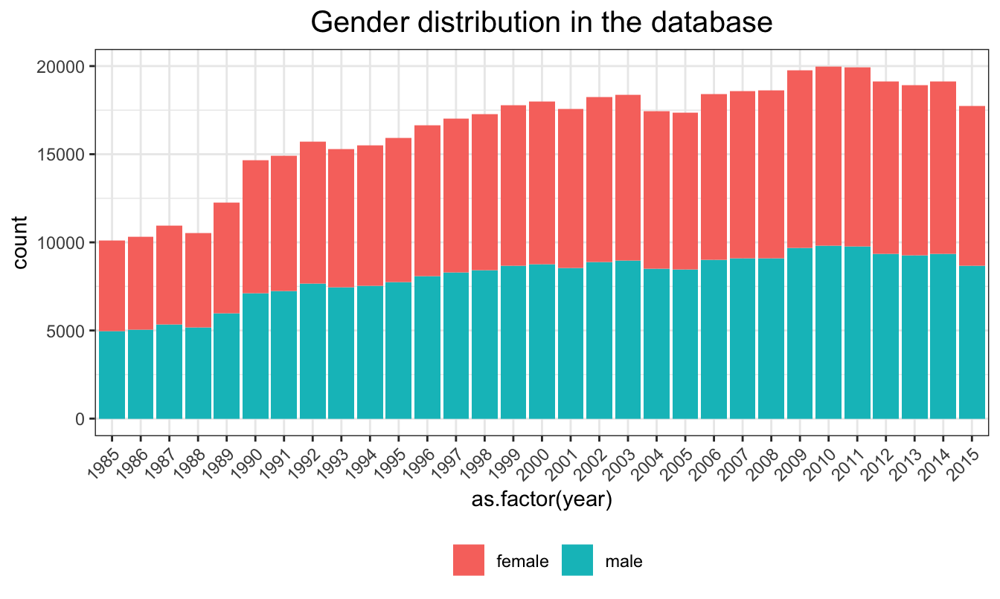
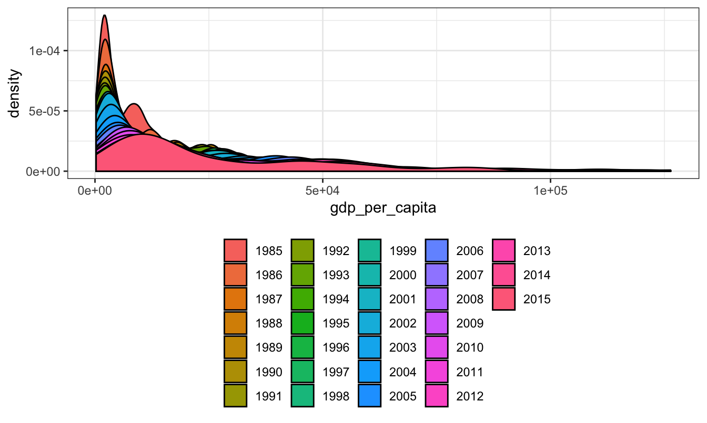
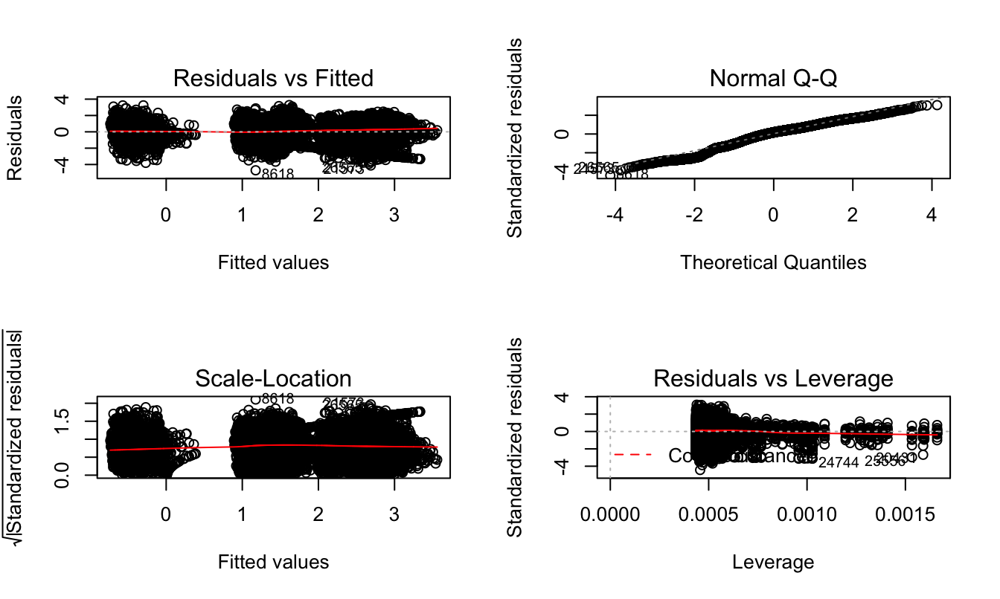

The main dataset for our project is a combined dataset from summary datasets made by United Nations Development Program, World Bank, Kaggle, and World Health Organization. It can be access at here. This dataset has a range from 1985 to 2016. However, since there are very few data in 2016, we will only keep the range from 1985 to 2015.
The raw dataset has a size of 27660 observations and 8 features. Basic features we are interested in include:
Besides those, we will derive our main interested variable, Suicides Per 100K as Suicides_no divided by Population and mutiplied by 100,000.
There are average 74.3548387 countries in the dataset across each year. Graph below shows the distribution. Although there are less countries before 1995, the amount of countries for each year is stable arount 80.
Graph below shows that sex for each year is also evenly distributed.

Although there are some variation between groups, theration between amounts of people in different age groups are consistent across years.
The distribution of GDP per capita is skewed to the right. As the year goes on, we can see that the distribution becomes more relatively flater.

As we mentioned above, we can derive our main interested variable, Suicides Per 100K, as Suicides_no divided by Population and mutiplied by 100,000. The trend is shown as below. As we can see, in recent years, the estimated suicides are decreasing.
Visualization will be used to examine the global general trend. We will detect the group difference by sex, age, and GDP per capita by doing regression analysis. The interaction terms between age groupand sex are also considered since it’s possible that sex can have different suicide trend regarding different age groups. For example women in menopause might have higher suicide rate because of hormonal fluctuation. Lastly, although not our primary interest, we will fit a regression model to see whether there is a sign of national-specific trend.
Following is the distribution of suicide_100k_pop, we can see that we need to transform it to satisfy the assumptions for linear model.
We used log transformation and changed 0’s to 0.01 for further calculations. Following graphs show that after transformation, the distribution has been much more normal than the previous one.
Based on transformation above, the model we are going to fit is:
\[ log(suicide \space per \space 100k) = \beta_0 + \beta_1year + \beta_2sex + \beta_3 age + \beta_4 age*sex + \beta_5 gdp \space per \space capita\]| Estimate | Std. Error | t value | Pr(>|t|) | |
|---|---|---|---|---|
| (Intercept) | 20.4128030 | 1.6138338 | 12.648641 | 0.0000000 |
| year | -0.0096925 | 0.0008074 | -12.004703 | 0.0000000 |
| sexmale | 1.0971519 | 0.0313288 | 35.020566 | 0.0000000 |
| age25-34 | 0.0827020 | 0.0313288 | 2.639807 | 0.0083000 |
| age35-54 | 0.2699173 | 0.0313288 | 8.615630 | 0.0000000 |
| age5-14 | -1.6251063 | 0.0313288 | -51.872616 | 0.0000000 |
| age55-74 | 0.3531358 | 0.0313288 | 11.271926 | 0.0000000 |
| age75+ | 0.4404010 | 0.0313288 | 14.057388 | 0.0000000 |
| gdp_per_capita | 0.0000067 | 0.0000004 | 18.529951 | 0.0000000 |
| sexmale:age25-34 | 0.2767489 | 0.0443056 | 6.246365 | 0.0000000 |
| sexmale:age35-54 | 0.2562206 | 0.0443056 | 5.783030 | 0.0000000 |
| sexmale:age5-14 | -0.8449252 | 0.0443056 | -19.070394 | 0.0000000 |
| sexmale:age55-74 | 0.1647189 | 0.0443056 | 3.717790 | 0.0002014 |
| sexmale:age75+ | 0.2615484 | 0.0443056 | 5.903282 | 0.0000000 |
Based on the summary, we can see that all our main effects and the interaction term are statistically significant. This indicates that there indeed are group difference by age, gender, and GDP per capita. As we purposed, sex can have different suicide trend regarding different age groups.
The F-statistics is 2221.3144029. It’s obvious that the model is statistically significant under any reasonable critical value. It also has a \(R^2\) value of 0.5108901, which indicateds our chose variables together are able to explain \(51.09\%\) of observed variation.
To ensure accuracy, we also examined the assumptions of our model. The Residuals vs Fitted and Scale-Location value plot shows that the model is nearly homoscedastic. Normality assumption is examined by Q-Q plot, which is satisfied. Lastly, the Residuals vs Leverage plot indicates that although there are about 3 potential outliers in our dataset, none of them is close enough to the contour of cook’s distance to be considered as influential observations.

In addition, we fitted added country and population into previous model.
\[ log(suicide \space per \space 100k) = \beta_0 + \beta_1year + \beta_2sex + \beta_3 age + \beta_4 age*sex + \beta_5 gdp \space per \space capita + \beta_6 Country\]
The anova result indicates that at least one of country and population variable is statistically significant. This means that a more micro studies such as national level suicide trend analysis can be a topic for future topic.
## Analysis of Variance Table
##
## Model 1: log_suicide ~ country + sex + age + gdp_per_capita + sex * age
## Model 2: log_suicide ~ year + sex * age + gdp_per_capita
## Res.Df RSS Df Sum of Sq F Pr(>F)
## 1 27548 16220
## 2 27646 31272 -98 -15052 260.86 < 2.2e-16 ***
## ---
## Signif. codes: 0 '***' 0.001 '**' 0.01 '*' 0.05 '.' 0.1 ' ' 1Our regression model indicates that all our main effects (i.e. age_group, sex, GDP per capita) and the interaction term between age_group andsex are statistically significant. This indicates that there indeed are group difference by age and gender. As we purposed, gender can have different impacts on amount of suicides regarding different age group. An interesting find is that although there are no obvious trend between amount of suicides and GDP per capita based on graph, the regression output shows that GDP per capita does have a statitically significant effect on amount of suicides.
A strength of this study is a longitudinal study with a time spin of 30 years, which gives us more chance to explore the justifications and trends behand the data. Meanwhile, there are many limitations future researchers need to be aware of. First of all, there are only few variables that may related with suicide rate. However, there are other factors or latent factors that may reflected by suicide rate such as alcohol use. Secondly, since we have done a global trend analysis, we need data from all over the world. However, this particular data set lacks the suicide information from Asia and Africa. Lastly, the data is not individual-leveled which may intervene our analysis for prediction purpose.